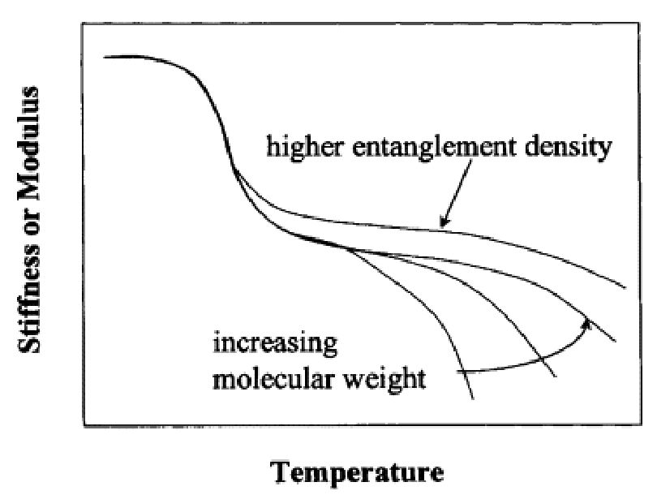
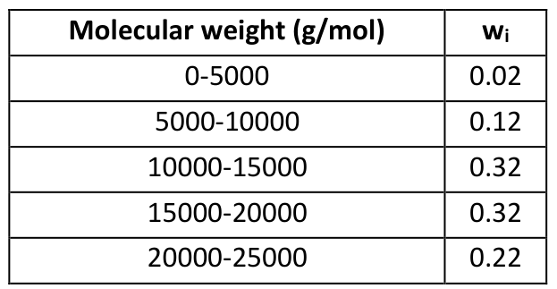
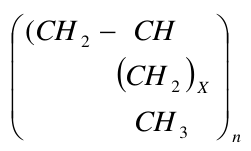
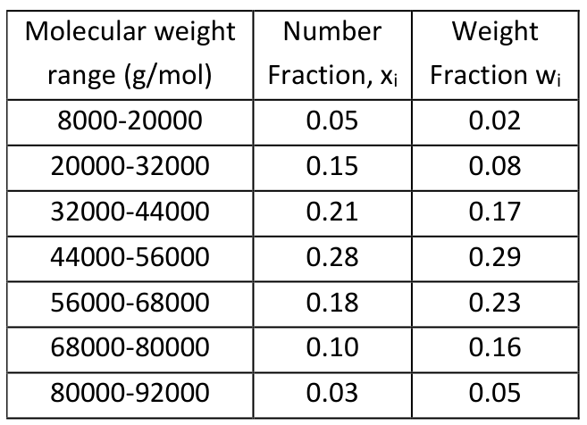
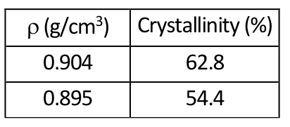

Topic 9: Solved Problems
Step-by-step solutions of all 9 problems of the official sheet on polymers (Problems T9_Polymers: degree of polymerization, crystallinity from the density, number and weight average molecular weights, and the effect of structure, crystallinity and temperature on the melting temperature, the stiffness and the strength, from Sessions 19 and 20). The sheet prints a numeric key for the numerical items, so each solution is derived here and compared with that key.
Problem 1
Problems T9_Polymers.pdf #1
Degree of polymerization · chains per gram
Click to Collapse ▲
Degree of Polymerization and Number of Chains of PMMA
Original statement · Problems T9_Polymers.pdf
- The molecular weight of PMMA is 250 000 g/mol. If all the chains have the same size, calculate (a) the degree of polymerization and (b) number of chains in 1 g of polymer.
Data: Atomic mass (g/mol): O = 16, H = 1, C = 12.
Hypotheses
- Monodisperse polymer. All the chains have the same size, as the statement says, so every average molecular weight equals the molecular weight of one chain: $M_n = M_w = M = 250\,000$ g/mol and the index of polydispersion is $I = 1$ [Session 19 Slide 13].
- Repeat unit of PMMA. Polymethyl methacrylate is $\mathrm{-[CH_2{-}C(CH_3)(COOCH_3)]_n-}$ [Session 19 Slide 50; Session 20 Slide 8]. Counting the atoms of the unit: C in $\mathrm{CH_2}$, the backbone C, $\mathrm{CH_3}$, $\mathrm{C{=}O}$ and $\mathrm{OCH_3}$ gives 5 C; H in $\mathrm{CH_2}$, $\mathrm{CH_3}$ and $\mathrm{OCH_3}$ gives $2 + 3 + 3 = 8$ H; and the ester group has 2 O. The repeat unit is $\mathrm{C_5H_8O_2}$.
- Avogadro's number. $N_A = 6.022\times10^{23}$ mol⁻¹ (not given on the sheet; standard constant).
Data
| Quantity | Symbol | Value |
|---|---|---|
| Molecular weight of the polymer | $M$ | 250 000 g/mol |
| Atomic masses | C, H, O | 12, 1, 16 g/mol |
| Mass of polymer | $m$ | 1 g |
| Avogadro's number | $N_A$ | $6.022\times10^{23}$ mol⁻¹ |
Unknowns: (a) the degree of polymerization $X_n$; (b) the number of chains $N$ in 1 g.
The degree of polymerization is the average number of monomer units in a chain [Session 19 Slide 12]:
with $M_0$ the molecular weight of the repeat unit. A mole of chains contains $N_A$ chains, so the number of chains in a mass $m$ is the number of moles of chains, $m/M$, times $N_A$.
Strategy.
- Compute $M_0$ of the PMMA repeat unit from the atomic masses.
- Divide the chain molecular weight by $M_0$.
- Convert 1 g into moles of chains and then into chains.
1. Molecular weight of the repeat unit
2. (a) Degree of polymerization [Session 19 Slide 12]
3. (b) Number of chains in 1 g
Moles of chains in 1 g:
Number of chains:
(more digits: $2.4088\times10^{18}$).
Checks
- Units. $X_n = (\text{g/mol})/(\text{g/mol})$ is a pure number, as a count of units must be. $N = (\text{g})/(\text{g/mol})\times\text{mol}^{-1}$ is a pure number of chains.
- Mass of one chain. $M/N_A = 250\,000\ \text{g/mol}/6.022\times10^{23}\ \text{mol}^{-1} = 4.15\times10^{-19}$ g, and $1\ \text{g}/4.15\times10^{-19}\ \text{g} = 2.41\times10^{18}$ chains, the same result.
- Second route. 1 g holds $1/100 = 0.01$ mol of repeat units, that is $6.022\times10^{21}$ units; divided by 2500 units per chain this again gives $2.409\times10^{18}$ chains.
- Limit. If the chains were shorter (smaller $X_n$), the same gram would contain more chains: $N$ is inversely proportional to $M$.
Interpretation
Each PMMA chain is a molecule of 2500 repeat units, about four hundred thousand times smaller in mass than a microgram, so even one gram of plastic holds a few $10^{18}$ macromolecules. In a real PMMA the chains are not all the same size; then $M$ in the statement would be the number average $M_n$, and the same two formulas would give the average degree of polymerization and the number of chains.
Check against the official solution
| Item | Official | Computed | Comment |
|---|---|---|---|
| (a) Degree of polymerization | 2500 | 2500 | agrees |
| (b) Chains in 1 g | $2.408\times10^{18}$ | $2.4088\times10^{18}$ | agrees; the key truncates the last digit |
Problem 2
Problems T9_Polymers.pdf #2
Crystallinity · branching, copolymers, tacticity
Click to Collapse ▲
Which Polymer of Each Pair Crystallizes More Easily
Original statement · Problems T9_Polymers.pdf
- Describe for each of the following polymer pairs, which one is more likely to crystallize? Explain your answer.
a) Branched Polyethylene vs linear polyethylene. b) Polyethylene vs polyethylene-polypropylene co-polymer. c) Isotactic Polypropylene vs Atactic polypropylene.
The key prints "Liner" and "Isostatic"; they mean linear and isotactic.
Hypotheses
- What crystallinity needs. The crystallinity of a polymer is the degree to which there are regions where the chains are aligned with one another [Session 19 Slide 23]; in the crystalline lamellae the chains fold back and forth in an ordered way [Session 19 Slide 25]. A chain crystallizes easily when it is regular along its length, so that neighbouring segments fit next to each other.
- Factors of the slides. Linear polymers pack best and are the most crystalline, branched ones less; symmetric and simple monomers favour crystallinity, complex ones lower it; random and graft copolymers are amorphous and alternating and block copolymers have some crystallinity; atactic polymers are amorphous, isotactic and syndiotactic ones probably crystalline [Session 19 Slides 26-27].
- Same conditions. Within each pair the cooling rate and the molecular weight are taken as equal, so only the structure of the chain decides.
Data
| Pair | Structural difference |
|---|---|
| a) | branched against linear chain of the same polymer |
| b) | homopolymer against copolymer with a second monomer |
| c) | regular (isotactic) against random (atactic) side groups |
Unknown: in each pair, the polymer that is more likely to crystallize, and why.
Each pair differs in only one structural feature, so each answer follows from one of the factors of Slides 26 and 27: the molecular structure (a), the copolymer sequence and the simplicity of the monomer (b), and the tacticity (c).

Strategy. For each pair, name the feature, say how it changes the regularity of the chain, and apply the rule of the slides.
1. a) Branched polyethylene against linear polyethylene [Session 19 Slides 22, 26-27]
The branches are side chains that stick out of the backbone at irregular places. They keep the backbones apart and prevent them from lying side by side in the folded lamellae, so the packing is poorer. Slide 26 states that linear polymers have a higher amount of packing and a higher degree of crystallinity, and branched polymers a lower one; the table of Slide 27 gives "most probable" for linear and "sometimes" for branched.
Answer: linear polyethylene.
2. b) Polyethylene against a polyethylene-polypropylene copolymer [Session 19 Slides 20, 27]
Polyethylene, $\mathrm{-[CH_2{-}CH_2]_n-}$, is the example of a symmetric and simple monomer ("Simple, YES" on Slide 27): every unit is the same and the chain is perfectly regular. In the copolymer, propylene units with a $\mathrm{CH_3}$ side group are inserted among the ethylene units. The statement does not say the type of copolymer; for a random sequence (the usual one) the $\mathrm{CH_3}$ groups appear at random places and the chain is irregular, so the copolymer is amorphous (Slide 27: random and graft copolymers are amorphous). Even an alternating or block copolymer has only "some crystallinity" according to the same slide, less than the regular homopolymer.
Answer: polyethylene.
3. c) Isotactic polypropylene against atactic polypropylene [Session 19 Slides 18-19, 26]
In polypropylene, $\mathrm{-[CH_2{-}CH(CH_3)]_n-}$, the $\mathrm{CH_3}$ groups can be all on the same side (isotactic), alternating (syndiotactic) or at random (atactic) [Session 19 Slide 18]. The isotactic chain repeats the same arrangement all along, so its segments fit together; the atactic chain has no pattern and cannot pack. Slide 26 states that atactic polymers are amorphous and isotactic or syndiotactic ones are probably crystalline, and Slide 19 adds that atactic polypropylene is a wax-type material with very bad mechanical properties.
Answer: isotactic polypropylene.
Checks
- One rule behind the three answers. In every pair the polymer chosen is the more regular one: no branches, one kind of unit, one arrangement of the side groups. Regularity is what lets chains fold into lamellae.
- Consistency with the density. The crystalline polymer is denser than the amorphous one [Session 19 Slide 24], so in each pair the chosen polymer would show the higher density for the same cooling, which is how the difference would be measured (the formula of Slide 25).
- Limit cases. A crosslinked polymer is the extreme of irregular packing: "almost never" crystalline [Session 19 Slide 27]. At the other extreme, a linear, isotactic homopolymer of a simple monomer is the most likely to crystallize.
Interpretation
Crystallinity is a question of geometry: chains crystallize when they can lie parallel and close together. Branches, foreign units and random side groups all break that order. The practical consequence is that the more crystalline member of each pair is also the denser, stiffer and stronger one with the higher melting temperature [Session 19 Slides 27, 43], which is why linear high-density polyethylene and isotactic polypropylene are the grades used for structural plastic parts.
Check against the official solution
| Item | Official | Computed | Comment |
|---|---|---|---|
| a) | linear PE (printed "Liner PE") | linear PE | agrees |
| b) | PE | PE | agrees |
| c) | isotactic PP (printed "Isostatic PP") | isotactic PP | agrees |
Problem 3
Problems T9_Polymers.pdf #3
Chain orientation · processing and strength
Click to Collapse ▲
Rolling or Fast-Cooled Casting for a Stronger Thermoplastic
Original statement · Problems T9_Polymers.pdf
- Assuming that a thermoplastic polymer can be produced by rolling (deformation) and casting (with fast cooling). Which one of the two methods will produce a polymer with higher strength? Explain your answer.
Hypotheses
- Same polymer. Both routes use the same thermoplastic (same chains, same molecular weight); only the processing differs.
- Rolling. Rolling deforms the solid polymer, stretching it in the rolling direction.
- Casting with fast cooling. The polymer is poured as a melt into a mould and cooled quickly, so the chains solidify in the arrangement they had in the liquid.
- What the slides say about strength. Deforming a polymer can increase its strength, because the chains become oriented and interact more effectively; the strength also increases with the degree of crystallinity [Session 19 Slide 43]. An oriented polymer is significantly stronger and stiffer than an isotropic one [Session 19 Slide 39].
Data
| Route | State of the chains |
|---|---|
| Rolling | chains aligned by the deformation |
| Fast-cooled casting | chains frozen as random coils, little time to crystallize |
Unknown: the route that gives the higher strength, and why.
The strength of a thermoplastic is set by how the chains resist sliding past each other: aligned, well-packed chains share the load through many secondary bonds along their length, while random coils carry it through few contacts and entanglements. The cold-drawing and strain-hardening stages of the tensile test show the same mechanism inside one specimen [Session 19 Slides 38-39].

Strategy.
- Describe the chain arrangement after each route.
- Compare the two with the factors of Slide 43.
1. Rolling [Session 19 Slides 38-39, 43]
The deformation unravels the coiled chains and aligns them parallel to the rolling direction, as in the cold drawing of the tensile test (Slide 38: the chains unravel, aligning themselves parallel to the direction of the applied stress). The aligned chains lie closer and interact more effectively, so more secondary bonds must be broken for them to slide; in a semicrystalline polymer the lamellae are also tilted and their block segments aligned with the axis (Slide 41). This is the strain hardening of Slide 39: the oriented polymer is significantly stronger and stiffer.
2. Casting with fast cooling [Session 19 Slides 26, 28]
In the melt the chains are random coils. Fast cooling gives them little time to fold into lamellae before the temperature drops below $T_g$ and the segments freeze (Slide 28): a faster cooling gives smaller crystals (Slide 26), and the chains that have not crystallized stay as an amorphous, isotropic tangle. That the fast cooling also lowers the degree of crystallinity is the author's reading of Slides 26 and 28 (the slides state the effect on the crystal size).
3. Comparison
| Rolling | Fast-cooled casting | |
|---|---|---|
| Chain orientation | aligned (anisotropic) | random (isotropic) |
| Interaction between chains | more effective | less effective |
| Crystallinity | kept or increased by alignment | reduced by the fast cooling |
| Strength | higher | lower |
Answer: the polymer produced by rolling.
Checks
- Direction. The gain in strength is in the direction of the orientation. Crystallization and orientation raise the anisotropy [Session 19 Slides 23-24], so a rolled sheet is strongest along the rolling direction; in the transverse direction the gain is smaller (extension).
- Limit of the deformation. Orientation can only be pushed until no further chain alignment is possible; then the polymer fractures [Session 19 Slide 40]. Rolling is therefore applied with a moderate reduction, not to failure.
- Same mechanism in fibres. Fibres are made with linear, oriented, crystalline chains and are the strongest form of a polymer [Session 20 Slide 16], which confirms the role of orientation.
Interpretation
In metals cold work raises the strength by multiplying dislocations; in a thermoplastic the deformation raises it by aligning the chains. The cast and quenched polymer is the opposite case: its chains are frozen as a disordered tangle, with the least effective interaction between them. Drawing and rolling are the reason why stretched films and fibres are much stronger than moulded blocks of the same polymer.
Check against the official solution
Problem 4
Problems T9_Polymers.pdf #4
Melting temperature · crystallinity, polarity, tacticity
Click to Collapse ▲
Which Polymer of Each Pair Has the Higher Melting Temperature
Original statement · Problems T9_Polymers.pdf
- Which of the following polymer pairs has higher melting temperature? Why?
a) Branched PE with <Mn> = 850 000 g/mol; Linear PE with <Mn> = 850 000 g/mol b) PTFE with density equal to 2.14 g/cm³ and <Mw> = 600 000 g/mol; PTFE with density equal to 2.20 g/cm³ and <Mw> = 600 000 g/mol. c) Syndiotactic PVC with <Mn> = 500 000 g/mol; Linear PE with <Mn> = 225 000 g/mol. d) Linear and syndiotactic PP with <Mw> = 750 000 g/mol; Atactic and linear PP with <Mw> = 500 000 g/mol.
Hypotheses
- Where $T_m$ comes from. $T_m$ is the transition of the crystalline regions [Session 19 Slide 28]: it is the temperature at which the ordered, folded chains of the lamellae come apart. A polymer with no crystalline regions has no melting temperature, only a glass transition [Session 19 Slide 23].
- Factors that raise $T_m$. More crystallinity raises $T_m$ [Session 19 Slide 27]; $T_m$ rises with the molecular weight and levels off for long chains [Session 19 Slide 30]; polar groups increase the intermolecular forces [Session 19 Slide 43] and the ordering [Session 19 Slide 27].
- Crystallinity and structure. Linear and regular (isotactic or syndiotactic) chains crystallize, branched chains less, atactic chains not at all [Session 19 Slides 26-27]; the crystalline polymer is denser than the amorphous one [Session 19 Slide 24].
- Reference values. Melting points printed on Session 20 Slide 8: polyethylene 110 – 137 °C, polyvinyl chloride about 204 °C, polypropylene 165 – 177 °C.
Data
| Pair | Same in both | Different |
|---|---|---|
| a) PE | $M_n = 850\,000$ g/mol | branched against linear |
| b) PTFE | $M_w = 600\,000$ g/mol | density 2.14 against 2.20 g/cm³ |
| c) | (different polymers) | syndiotactic PVC, $M_n = 500\,000$ g/mol, against linear PE, $M_n = 225\,000$ g/mol |
| d) PP | linear | syndiotactic, $M_w = 750\,000$ g/mol, against atactic, $M_w = 500\,000$ g/mol |
Unknown: in each pair, the polymer with the higher $T_m$, and why.
In each pair, find which polymer has more (or better) crystalline regions and stronger forces between its chains: that one needs more thermal energy to break up its crystals. The molecular weight acts in the same direction when it differs, but all the weights here are far above the range where Slide 30 shows a strong effect.

Strategy. For each pair: identify the controlling factor, apply the rule of the slides, and compare with the printed melting points where they exist.
1. a) Branched PE against linear PE, same $M_n$
The molecular weights are equal, so only the structure differs. The branches keep the chains from packing, so the branched PE has a lower degree of crystallinity and less perfect crystals [Session 19 Slides 26-27]; more crystallinity means a higher $T_m$ [Session 19 Slide 27].
Answer: the linear PE. (The range 110 – 137 °C printed for polyethylene on Session 20 Slide 8 covers both kinds; that the low end belongs to the branched, low-density PE and the high end to the linear, high-density PE is an extension.)
2. b) PTFE of density 2.14 against 2.20 g/cm³, same $M_w$
Same polymer and same molecular weight, so the density measures the crystallinity: the crystalline regions are denser than the amorphous ones [Session 19 Slide 24], and by the formula of Slide 25 the degree of crystallinity grows with the actual density $\rho_s$ for fixed $\rho_c$ and $\rho_a$:
(the derivative, by the quotient rule on $(\rho_s - \rho_a)/\rho_s = 1 - \rho_a/\rho_s$, is an extension). The denser PTFE is more crystalline and therefore has the higher $T_m$ [Session 19 Slide 27].
Answer: the PTFE of density 2.20 g/cm³.
3. c) Syndiotactic PVC against linear PE
Three factors point the same way:
- Polarity. PVC carries a polar C-Cl bond in every unit, $\mathrm{-[CH_2{-}CHCl]_n-}$; polar groups increase the intermolecular forces [Session 19 Slide 43] and the ordering [Session 19 Slide 27], so more energy is needed to separate the chains. PE has only C-H bonds and van der Waals forces.
- Regularity. The PVC is syndiotactic, so it can crystallize [Session 19 Slide 26].
- Molecular weight. $500\,000 > 225\,000$ g/mol, and $T_m$ rises with $M$ [Session 19 Slide 30], although at these weights the effect is small.
The printed melting points confirm it: about 204 °C for PVC against 110 – 137 °C for PE [Session 20 Slide 8]. The same side group raises $T_g$ from $-110$ °C (HDPE) to 87 °C (PVC) [Session 19 Slide 29].
Answer: the syndiotactic PVC.
4. d) Linear syndiotactic PP against linear atactic PP
The syndiotactic chain has its $\mathrm{CH_3}$ groups in a regular alternating pattern and can crystallize; the atactic chain has them at random and is amorphous [Session 19 Slides 18, 26]. An amorphous polymer has no crystalline regions, so it has no true melting temperature, only $T_g$ [Session 19 Slides 23, 28]: Slide 19 describes atactic PP as a wax-type material. The higher molecular weight of the syndiotactic PP (750 000 against 500 000 g/mol) adds in the same direction [Session 19 Slide 30].
Answer: the syndiotactic PP.
Checks
- Units of the derivative in b). $[\rho_c\rho_a/(\rho_s^2(\rho_c - \rho_a))] = (\text{g/cm}^3)^2/(\text{g/cm}^3)^3 = \text{cm}^3/\text{g}$, so $dX_c = (\text{cm}^3/\text{g})\,d\rho_s$ is dimensionless, as a fraction must be.
- Molecular weight. In pairs a) and b) the weights are equal, so they cannot be the reason; in c) and d) the weight differs but in the same direction as the structural factor, so the answers do not depend on how large its effect is.
- Limit. A fully amorphous polymer ($X_c = 0$, case of the atactic PP) has no $T_m$ at all; its stiffness falls at $T_g$ and it softens progressively [Session 19 Slide 45].
Interpretation
The melting temperature measures how well the chains are packed in crystals and how strongly they attract each other. Linear, regular, polar chains pack well and attract each other strongly; branched, random or non-polar chains do not. This is why the polymers chosen for parts that must work hot are the linear, regular and polar ones, such as the engineering thermoplastics of Session 20 Slide 9 (nylon 6,6, polycarbonate, polysulfone, with melting points of 250 to 315 °C).
Check against the official solution
| Item | Official | Computed | Comment |
|---|---|---|---|
| a) | linear PE > branched PE | linear PE | agrees |
| b) | PTFE 2.20 > PTFE 2.14 | PTFE 2.20 g/cm³ | agrees |
| c) | PVC > PE | syndiotactic PVC | agrees; about 204 °C against 110 – 137 °C on Session 20 Slide 8 |
| d) | syndiotactic PP > atactic PP | syndiotactic PP | agrees |
Problem 5
Problems T9_Polymers.pdf #5
log E against T · molecular weight, crosslinking, crystallinity
Click to Collapse ▲
Logarithm of Young's Modulus Against Temperature for an Amorphous Polymer
Original statement · Problems T9_Polymers.pdf
- Draw three representations of the logarithm of the Young's modulus versus temperature for an amorphous polymer.
a) In one of those show how the behavior changes when the molecular weight increases. b) In another diagram, show the behavior changes when crosslinking increases. c) If this polymer is processed so that it has some crystallinity, show how the Young's modulus changes with temperature.
The sheet prints no solution for this problem.
Hypotheses
- The base curve. An amorphous polymer has only a glass transition [Session 19 Slide 23]. Its modulus (measured, for example, as the relaxation modulus $E_r(10)$ at 10 s) goes through five regions as the temperature rises: glassy, about $10^3$ MPa, below $T_g$; leathery, the steep drop of about three decades around $T_g$; rubbery, a plateau; rubbery flow; and viscous flow (liquid) [Session 19 Slide 49].
- Log scale. The modulus changes by several orders of magnitude, so it is plotted as $\log E$; the drop at $T_g$ is then a step and the plateaus are horizontal lines [Session 19 Slides 45-46].
- What changes each curve. Higher molecular weight means more entanglements [Session 19 Slide 43]; crosslinks are covalent bonds between chains [Session 19 Slide 22]; crystalline regions melt only at $T_m$ [Session 19 Slide 28].
- Sketches. The statement asks for qualitative drawings; the figures of the slides are used as the drawings, and no numbers are needed.
Data
| Diagram | Parameter that changes |
|---|---|
| a) | molecular weight (entanglement density) |
| b) | degree of crosslinking |
| c) | degree of crystallinity |
Unknown: the three diagrams of $\log E$ against $T$ and the explanation of each change.
The modulus of a polymer is high when the chain segments cannot move (glass) and low when they can (rubber, liquid). Each structural change of the statement adds a different kind of obstacle to that motion above $T_g$, so each one acts on a different part of the base curve.

Strategy.
- Draw the base curve of the amorphous polymer and name its regions.
- For each case, say which region changes, in which direction and why, and give the diagram of the slides.
1. Base curve of the amorphous polymer [Session 19 Slide 49]
Below $T_g$ the segments are frozen and the modulus is high and nearly flat (glassy region). At $T_g$ the segments of the amorphous regions start to move [Session 19 Slide 28] and the modulus drops by about three orders of magnitude (leathery region). Above it the entanglements hold the chains together for a while, which gives the rubbery plateau; at higher temperatures whole chains slide past each other (rubbery flow) and finally the polymer flows as a viscous liquid.
2. a) Increasing molecular weight [Session 19 Slides 30, 43, 45]
The glassy region and the position of the drop hardly change ($T_g$ rises only slightly with $M$ and levels off for long chains, Slide 30). The change is above $T_g$: longer chains have more entanglements (Slide 43), which act as temporary links, so the rubbery plateau is longer and the flow region moves to higher temperatures. The slide draws it as curves that stay higher and fall later for higher entanglement density and increasing molecular weight.

3. b) Increasing crosslinking [Session 19 Slides 46, 49]
Crosslinks are permanent covalent bonds, so the chains can never slide past each other: the flow regions disappear, and the plateau above $T_g$ stays up to the temperature at which the polymer degrades. The more crosslinks, the higher the plateau and the smaller the drop at $T_g$; with heavy crosslinking (a thermoset) the modulus hardly falls at all and $T_g$ moves up. Slide 46 draws no, slight, increasing and heavy crosslinking; curve B of Slide 49 (lightly crosslinked atactic polystyrene) shows the flat rubbery plateau with no flow.

4. c) Some crystallinity [Session 19 Slides 45, 49]
The crystalline regions do not take part in the glass transition; they stay rigid up to $T_m$ and hold the amorphous regions between them [Session 19 Slide 28]. Therefore:
- the drop at $T_g$ is smaller, because only the amorphous fraction softens;
- above $T_g$ the modulus stays on a high plateau (leathery and tough) up to $T_m$;
- at $T_m$ the crystals melt and the modulus falls to the flow region.
The more crystalline the polymer, the smaller the drop at $T_g$; a 100 % crystalline polymer has no drop at $T_g$ and falls only at $T_m$. Slide 45 draws the 100 % amorphous, 50 % / 50 % and 100 % crystalline curves, and curve A of Slide 49 (crystalline isotactic polystyrene) shows a polymer that stays stiff up to its melting point.

Checks
- Order of magnitude. On the log scale the glassy modulus of polystyrene is about $10^3$ MPa, about 1 GPa, inside the range 0.007 – 4 GPa of polymers [Session 19 Slides 32, 49]. The plateau is about three decades lower, about 1 MPa, the modulus of a rubber.
- Limit cases. No crosslinks and no crystals: the base curve, which flows. Infinite crosslinking: a rigid network with no drop. 100 % crystallinity: no glass transition, one drop at $T_m$. The three diagrams go continuously from the base curve to these limits.
- Time and rate. The modulus is measured at a fixed time; at a higher strain rate the whole curve moves to higher temperatures, because a higher rate has the same effect as a lower temperature [Session 19 Slide 48].
Interpretation
The three changes act on different parts of the curve: the molecular weight only delays the flow, the crosslinks remove the flow and lift the plateau, and the crystallinity props the modulus up between $T_g$ and $T_m$. In use this decides the working temperature: an amorphous thermoplastic must work below $T_g$, a semicrystalline one can work up to near $T_m$, an elastomer works on its rubbery plateau and a thermoset keeps its stiffness until it degrades.
Check against the official solution
| Item | Official | Computed | Comment |
|---|---|---|---|
| a) Molecular weight | not printed on the sheet | longer rubbery plateau, flow at higher $T$ | consistent with Session 19 Slides 30, 43 and 45 |
| b) Crosslinking | not printed on the sheet | higher plateau, smaller drop, no flow | consistent with Session 19 Slides 46 and 49 |
| c) Crystallinity | not printed on the sheet | smaller drop at $T_g$, plateau up to $T_m$ | consistent with Session 19 Slides 45 and 49 |
Problem 6
Problems T9_Polymers.pdf #6
Crystallinity from density · modulus against T
Click to Collapse ▲
Degree of Crystallinity of Polypropylene from Its Density
Original statement · Problems T9_Polymers.pdf
- Determine the degree of crystallinity of polypropylene with density 0.853g/cm³, given that the densities of amorphous and totally crystalline polypropylene are 0.83 and 0.947 g/cm³ respectively. Represent the change in the elastic modulus with temperature for this polymer, a completely amorphous polymer and a completely crystalline polymer.
Hypotheses
- Two-phase sample. The polypropylene is a mixture of crystalline regions of density $\rho_c$ and amorphous regions of density $\rho_a$ [Session 19 Slide 24], and the degree of crystallinity is the mass fraction of crystalline polymer, given by the formula of Session 19 Slide 25 (its derivation from the additive volumes is in the theory note, Section 10.3).
- Modulus curves. The modulus against temperature for 100 % amorphous, 50 % / 50 % and 100 % crystalline polymers is the figure of Session 19 Slide 45.
- Temperatures of polypropylene. $T_g = -20$ °C (table of Session 19 Slide 29; the panel of the same slide prints $-15$ °C) and $T_m = 165$ – $177$ °C [Session 20 Slide 8].
Data
| Quantity | Symbol | Value |
|---|---|---|
| Density of the sample | $\rho_s$ | 0.853 g/cm³ |
| Density of amorphous PP | $\rho_a$ | 0.83 g/cm³ |
| Density of totally crystalline PP | $\rho_c$ | 0.947 g/cm³ |
Unknowns: the degree of crystallinity, and the modulus-temperature curves of this PP, of an amorphous polymer and of a crystalline polymer.
[Session 19 Slide 25]:
The sample density lies between $\rho_a$ and $\rho_c$, and the formula places it on the scale between the two in terms of mass.
Strategy.
- Check that $\rho_a < \rho_s < \rho_c$.
- Evaluate the numerator and the denominator separately and divide.
- Place the result among the curves of Slide 45.
1. Order of the densities
so the result must lie between 0 and 100 %, and since $\rho_s$ is much closer to $\rho_a$, near the amorphous end.
2. Numerator and denominator
3. Degree of crystallinity
4. Modulus against temperature [Session 19 Slide 45]
- Completely amorphous polymer: high glassy modulus below $T_g$, a drop of several decades at $T_g$, a short plateau and the fall to flow; there is no $T_m$.
- Completely crystalline polymer: no glass transition; the modulus stays high and falls only at $T_m$.
- This polypropylene, 21.8 % crystalline: its curve lies between the amorphous curve and the 50 % / 50 % curve of the slide. At $T_g$ (about $-20$ °C) it drops, but less than the amorphous polymer, because 21.8 % of its mass stays crystalline; between $T_g$ and $T_m$ it keeps an intermediate plateau held by the crystallites; at $T_m$ (165 – 177 °C) the crystals melt and the modulus falls to the flow region.
Checks
- Units. Numerator and denominator are both products of two densities, $(\text{g/cm}^3)^2$, so the ratio is dimensionless.
- Limits. $\rho_s = \rho_a$ gives $0$ and $\rho_s = \rho_c$ gives $\rho_c(\rho_c - \rho_a)/[\rho_c(\rho_c - \rho_a)] = 1$, that is 100 %.
- Mass against volume fraction. The volume fraction would be $(\rho_s - \rho_a)/(\rho_c - \rho_a) = 0.023/0.117 = 19.7\ \%$; the mass fraction is larger, $\times\rho_c/\rho_s = 0.947/0.853 = 1.110$, because the crystalline regions are denser (extension).
Interpretation
Only about one fifth of this polypropylene is crystalline. Room temperature lies above its $T_g$, so the amorphous four fifths are rubbery and the stiffness at room temperature comes from the crystalline fifth: a polymer with this low crystallinity is soft and tough rather than stiff. A more crystalline grade (isotactic PP, slowly cooled) would have a higher density and a higher plateau, closer to the crystalline curve.
Check against the official solution
Problem 7
Problems T9_Polymers.pdf #7
Weight average · polydispersity · repeat unit
Click to Collapse ▲
Weight Average, Polydispersity and Repeat Unit of a Polyalkene
Original statement · Problems T9_Polymers.pdf, p. 2
- A thermoplastic polymer has been analyzed, obtaining the following fractions of weight wᵢ shown in the table for the following ranges of molecular weight in the table:
a) Calculate the weight-average molecular weight b) Calculate de polydispersity assuming that the number average molecular weight is 12880 g/mol. c) If the polymerization degree is 230 and assuming that the polymer is an alkene (CₙH₂ₙ) with the general formula shown below, determine the value of X in the structural formula below. (Atomic mass: H = 1, C = 12). d) Explain if the crystallinity of the polymer should be higher or lower than the crystallinity of polyethylene.


The sheet prints "Calculate de polydispersity". The structural formula is a repeat unit $\mathrm{-CH_2{-}CH-}$ with the side chain $\mathrm{(CH_2)_X{-}CH_3}$ hanging from the CH, in brackets with subscript $n$.
Hypotheses
- Mean of each range. Each range is represented by its midpoint $M_i$, as in the example of Session 19 Slides 14-15.
- Averages. $M_w = \sum w_i M_i$ and the index of polydispersion $I = M_w/M_n$ [Session 19 Slide 13]; the sheet calls it PDI.
- Degree of polymerization. The polymerization degree 230 is the number average $X_n = M_n/M_0$ [Session 19 Slide 12], with $M_n = 12\,880$ g/mol from part b).
- Repeat unit. Counting the atoms of the drawn unit: $\mathrm{CH_2}$, $\mathrm{CH}$, $X$ groups $\mathrm{CH_2}$ and $\mathrm{CH_3}$.
Data
| Range (g/mol) | Midpoint $M_i$ (g/mol) | $w_i$ |
|---|---|---|
| 0 – 5 000 | 2 500 | 0.02 |
| 5 000 – 10 000 | 7 500 | 0.12 |
| 10 000 – 15 000 | 12 500 | 0.32 |
| 15 000 – 20 000 | 17 500 | 0.32 |
| 20 000 – 25 000 | 22 500 | 0.22 |
$\sum w_i = 0.02 + 0.12 + 0.32 + 0.32 + 0.22 = 1.00$. Also $M_n = 12\,880$ g/mol, $X_n = 230$, C = 12 g/mol, H = 1 g/mol.
Unknowns: (a) $M_w$; (b) the polydispersity; (c) $X$; (d) crystallinity compared with polyethylene.
[Session 19 Slides 12-13]:
Strategy.
- Weight each midpoint by its weight fraction and add.
- Divide by the given $M_n$.
- Get $M_0$ from $M_n$ and $X_n$, write $M_0$ of the drawn unit as a function of $X$ and solve.
- Compare the chain with polyethylene using the factors of crystallinity of Slides 26-27.
1. a) Weight-average molecular weight [Session 19 Slide 13]
| $M_i$ (g/mol) | $w_i$ | $w_i M_i$ (g/mol) |
|---|---|---|
| 2 500 | 0.02 | 50 |
| 7 500 | 0.12 | 900 |
| 12 500 | 0.32 | 4 000 |
| 17 500 | 0.32 | 5 600 |
| 22 500 | 0.22 | 4 950 |
2. b) Polydispersity [Session 19 Slide 13]
3. c) Value of X [Session 19 Slide 12]
Molecular weight of the repeat unit from the degree of polymerization:
Atoms of the drawn unit: carbon, $1\ (\mathrm{CH_2}) + 1\ (\mathrm{CH}) + X\ (\mathrm{CH_2}\ \text{groups}) + 1\ (\mathrm{CH_3}) = X + 3$; hydrogen, $2 + 1 + 2X + 3 = 2X + 6$. The unit is $\mathrm{C}_{X+3}\mathrm{H}_{2X+6}$, that is $\mathrm{C}_n\mathrm{H}_{2n}$ with $n = X + 3$, an alkene formula as the statement says. Its molecular weight:
Setting it equal to 56.0 g/mol:
The repeat unit is $\mathrm{-CH_2{-}CH(CH_2CH_3)-}$, $\mathrm{C_4H_8}$ (56 g/mol): a vinyl polymer with an ethyl side group, the polymer of 1-butene, usually called poly(1-butene) or polybutene (the name is an extension; it is not on the slides).
4. d) Crystallinity compared with polyethylene [Session 19 Slides 26-27]
Polyethylene, $\mathrm{-[CH_2{-}CH_2]_n-}$, is the example of a simple, symmetric monomer that crystallizes easily (Slide 27). This polymer has an ethyl side group on every second carbon:
- the side group is bulkier and makes the unit more complex, and complex monomeric structures lower the degree of crystallinity (Slide 26);
- the CH carbon carries two different groups, so the polymer can be atactic, and atactic polymers are amorphous (Slide 26); only an isotactic or syndiotactic grade could crystallize, and still with more difficulty than PE.
Answer: lower than polyethylene.
Checks
- Units. $w_i$ is dimensionless, so $M_w$ is in g/mol; $I$ and $X_n$ are pure numbers; $M_0 = M_n/X_n$ is in g/mol.
- $M_w \ge M_n$. $15\,500 > 12\,880$ g/mol, so $I = 1.203 > 1$, as it must be for a polymer with a distribution of lengths.
- Back-substitution. $230\times56\ \text{g/mol} = 12\,880$ g/mol, exactly the given $M_n$.
- Limit. $X = 0$ would give $\mathrm{C_3H_6}$ (42 g/mol), polypropylene; each extra $\mathrm{CH_2}$ adds 14 g/mol, so only $X = 1$ matches 56 g/mol.
Interpretation
The data describe a moderately polydisperse polymer ($I = 1.2$) of about 230 units per chain, whose unit is polypropylene with one more $\mathrm{CH_2}$ in the side group. The longer side group makes the chain less regular than polyethylene and polypropylene, so it packs less well and is less crystalline, which also means a lower density, stiffness and melting point than polyethylene of similar chain length.
The key gives "X = 1, polybutadiene". The value $X = 1$ agrees, but the drawn unit with $X = 1$ is $\mathrm{C_4H_8}$, a saturated unit with an ethyl side group (the polymer of 1-butene), not polybutadiene. Polybutadiene is made from 1,3-butadiene, $\mathrm{CH_2{=}CH{-}CH{=}CH_2}$ [Session 20 Slide 15]; its repeat unit keeps one double bond, $\mathrm{C_4H_6}$ = 54 g/mol, does not follow the $\mathrm{C}_n\mathrm{H}_{2n}$ formula of the statement, and $230\times54 = 12\,420$ g/mol does not give the stated $M_n = 12\,880$ g/mol. The name in the key is therefore not consistent with the statement; the computed polymer is the polymer of 1-butene.
Check against the official solution
| Item | Official | Computed | Comment |
|---|---|---|---|
| a) $M_w$ | 15 500 g/mol | 15 500 g/mol | agrees |
| b) PDI | 1.2 | 1.203 | agrees |
| c) $X$ | 1, polybutadiene | 1, unit $\mathrm{C_4H_8}$ (polymer of 1-butene) | $X$ agrees; the name does not (see the warning) |
| d) Crystallinity | lower | lower than PE | agrees |
Problem 8
Problems T9_Polymers.pdf #8
Mn and Mw · monomer identification · nylon 6,6
Click to Collapse ▲
Number and Weight Averages and Monomer of an Unknown Polymer
Original statement · Problems T9_Polymers.pdf, p. 2
- A polymer sample with unknown molecular weight has been analyzed and the following results were obtained.
a) Calculate the number-average and weight-average molecular weight. b) If the number average degree of polymerization is 211, calculate the molecular weight of the monomeric unit. c) Which of these polymers correspond to: PE, PVC, PTFE, PP, PS, PMMA, Nylon 66, PC. d) What is the weight-average degree of polymerization?

Hypotheses
- Mean of each range. Each range is represented by its midpoint $M_i$ [Session 19 Slides 14-15].
- Averages. $M_n = \sum x_i M_i$, $M_w = \sum w_i M_i$ [Session 19 Slide 13], and $X_n = M_n/M_0$ [Session 19 Slide 12].
- Weight-average degree of polymerization. By analogy with $X_n$, $X_w = M_w/M_0$ (this definition is an extension; the slides define only $X_n$).
- Repeat units of the candidates. From Session 19 Slide 50 and Session 20 Slides 8-9: PE $\mathrm{C_2H_4}$, PVC $\mathrm{C_2H_3Cl}$, PTFE $\mathrm{C_2F_4}$, PP $\mathrm{C_3H_6}$, PS $\mathrm{C_8H_8}$, PMMA $\mathrm{C_5H_8O_2}$, nylon 6,6 $\mathrm{-[NH{-}(CH_2)_6{-}NH{-}CO{-}(CH_2)_4{-}CO]-}$ = $\mathrm{C_{12}H_{22}N_2O_2}$, and polycarbonate $\mathrm{-[O{-}CO{-}O{-}C_6H_4{-}C(CH_3)_2{-}C_6H_4]-}$ = $\mathrm{C_{16}H_{14}O_3}$. Atomic masses C = 12, H = 1, N = 14, O = 16, F = 19, Cl = 35.5 g/mol (the sheet gives none for this problem; standard values).
Data
| Range (g/mol) | Midpoint $M_i$ (g/mol) | $x_i$ | $w_i$ |
|---|---|---|---|
| 8 000 – 20 000 | 14 000 | 0.05 | 0.02 |
| 20 000 – 32 000 | 26 000 | 0.15 | 0.08 |
| 32 000 – 44 000 | 38 000 | 0.21 | 0.17 |
| 44 000 – 56 000 | 50 000 | 0.28 | 0.29 |
| 56 000 – 68 000 | 62 000 | 0.18 | 0.23 |
| 68 000 – 80 000 | 74 000 | 0.10 | 0.16 |
| 80 000 – 92 000 | 86 000 | 0.03 | 0.05 |
$\sum x_i = 1.00$ and $\sum w_i = 1.00$. Also $X_n = 211$.
Unknowns: (a) $M_n$ and $M_w$; (b) $M_0$; (c) the polymer; (d) $X_w$.
[Session 19 Slides 12-13]:
Strategy.
- Compute the two weighted sums.
- Divide $M_n$ by $X_n$ to get the molecular weight of the repeat unit.
- Compute $M_0$ of every candidate and pick the one that matches.
- Divide $M_w$ by $M_0$.
1. a) Number-average and weight-average molecular weights [Session 19 Slide 13]
| $M_i$ (g/mol) | $x_i M_i$ (g/mol) | $w_i M_i$ (g/mol) |
|---|---|---|
| 14 000 | 700 | 280 |
| 26 000 | 3 900 | 2 080 |
| 38 000 | 7 980 | 6 460 |
| 50 000 | 14 000 | 14 500 |
| 62 000 | 11 160 | 14 260 |
| 74 000 | 7 400 | 11 840 |
| 86 000 | 2 580 | 4 300 |
2. b) Molecular weight of the monomeric unit [Session 19 Slide 12]
3. c) Identification of the polymer
| Polymer | Repeat unit | $M_0$ (g/mol) |
|---|---|---|
| PE | $\mathrm{C_2H_4}$: $2(12) + 4(1)$ | 28 |
| PVC | $\mathrm{C_2H_3Cl}$: $2(12) + 3(1) + 35.5$ | 62.5 |
| PTFE | $\mathrm{C_2F_4}$: $2(12) + 4(19)$ | 100 |
| PP | $\mathrm{C_3H_6}$: $3(12) + 6(1)$ | 42 |
| PS | $\mathrm{C_8H_8}$: $8(12) + 8(1)$ | 104 |
| PMMA | $\mathrm{C_5H_8O_2}$: $5(12) + 8(1) + 2(16)$ | 100 |
| Nylon 6,6 | $\mathrm{C_{12}H_{22}N_2O_2}$: $12(12) + 22(1) + 2(14) + 2(16)$ | 226 |
| PC | $\mathrm{C_{16}H_{14}O_3}$: $16(12) + 14(1) + 3(16)$ | 254 |
For nylon 6,6 the count is: carbon $6 + 1 + 4 + 1 = 12$ (the two $(\mathrm{CH_2})$ blocks and the two C=O); hydrogen $1 + 12 + 1 + 8 = 22$ (the two N-H and the ten $\mathrm{CH_2}$); 2 N; 2 O. Only nylon 6,6 has $M_0$ close to 226.2 g/mol.
Answer: nylon 6,6.
4. d) Weight-average degree of polymerization
(with the rounded $M_0 = 226$ g/mol of nylon 6,6, $X_w = 237.7$, also 238).
Checks
- Units. $x_i$ and $w_i$ are dimensionless, so $M_n$ and $M_w$ are in g/mol; $X_n$ and $X_w$ are pure numbers.
- $M_w \ge M_n$. $53\,720 > 47\,720$ g/mol; the index of polydispersion is $I = 53\,720/47\,720 = 1.126$, a narrow distribution.
- Consistency of the two columns (extension). The weight fraction of a range follows from its number fraction as $w_i = x_i M_i/M_n$: for 44 000 – 56 000 g/mol, $0.28\times50\,000/47\,720 = 0.293$, against 0.29 in the table. Computed in the same way from the $x_i$, $M_w = \sum x_i M_i^2/\sum x_i M_i = 53\,978$ g/mol, 0.5 % above the 53 720 g/mol of the $w_i$ column, so the two columns describe the same sample within the rounding of the table.
- Second candidate. The closest other candidate, polycarbonate (254 g/mol), would need $X_n = 47\,720/254 = 188$, not 211.
Interpretation
The sample is a nylon 6,6 with about 211 repeat units per chain on a number basis and 238 on a weight basis; the weight average is larger because the long chains carry more of the mass. Nylon 6,6 is the polyamide used for fibres (Session 19 Slide 50) and an engineering thermoplastic with a melting point of 250 – 266 °C (Session 20 Slide 9), the result of its polar amide groups that form hydrogen bonds between chains (Session 19 Slide 26).
Check against the official solution
| Item | Official | Computed | Comment |
|---|---|---|---|
| a) $M_n$ | 47 720 | 47 720 g/mol | agrees |
| a) $M_w$ | 53 720 | 53 720 g/mol | agrees |
| b) $M_0$ | 226.2 | 226.16 g/mol | agrees |
| c) Polymer | Nylon 66 | nylon 6,6 | agrees |
| d) $X_w$ | 238 | 237.5 | agrees after rounding |
Problem 9
Problems T9_Polymers.pdf #9
Two samples · crystalline and amorphous densities
Click to Collapse ▲
Densities of Crystalline and Amorphous Polypropylene from Two Samples
Original statement · Problems T9_Polymers.pdf, p. 2
9.- The densities of amorphous and totally crystalline polypropylene are given in the table below. a) Write the formula of polypropylene and justify whether it can present tacticity. b) Calculate the density of completely crystalline and completely amorphous polypropylene. c) Deterrmine the density of a sample that is 74.6% crystalline.

The sheet prints "Deterrmine". The first sentence says that the table gives the densities of amorphous and totally crystalline polypropylene, but the table gives the density and the crystallinity of two samples, and part b) asks for the two densities: they are the unknowns.
Hypotheses
- Same polypropylene. Both samples are the same polymer, so they share the same $\rho_c$ and $\rho_a$ and differ only in their degree of crystallinity.
- Crystallinity formula. The degree of crystallinity (mass fraction) is $X_c = \rho_c(\rho_s - \rho_a)/[\rho_s(\rho_c - \rho_a)]$ [Session 19 Slide 25].
- Repeat unit. Polypropylene is $\mathrm{-[CH_2{-}CH(CH_3)]_n-}$ [Session 19 Slide 50].
Data
| Sample | $\rho_s$ (g/cm³) | $X_c$ |
|---|---|---|
| 1 | 0.904 | 0.628 |
| 2 | 0.895 | 0.544 |
| 3 (part c) | unknown | 0.746 |
Unknowns: (a) the formula and its tacticity; (b) $\rho_c$ and $\rho_a$; (c) $\rho_s$ for $X_c = 0.746$.
The formula of Slide 25 has two unknowns, $\rho_c$ and $\rho_a$, and each sample gives one equation, so two samples fix both. The formula is not linear in the densities, but it becomes linear in the specific volumes $1/\rho$. Multiply both sides by $\rho_s(\rho_c - \rho_a)$ and divide by $\rho_s\rho_c\rho_a$:
which says that the specific volume of the sample is the mass-weighted mean of the specific volumes of its crystalline and amorphous parts. With $u = 1/\rho_c$ and $v = 1/\rho_a$ each sample gives a linear equation.
Strategy.
- Write the formula of polypropylene and look at its asymmetric carbon.
- Write the two linear equations in $u$ and $v$ and solve them.
- Use the same relation with $X_c = 0.746$.
1. a) Formula and tacticity [Session 19 Slides 18-19]
Every second carbon of the chain carries a $\mathrm{CH_3}$ side group and an H, so it has four different neighbours (H, $\mathrm{CH_3}$ and the two chain segments). The $\mathrm{CH_3}$ group can be placed on one side or the other of the chain each time a unit is added: polypropylene is a vinyl polymer $\mathrm{H_2C{=}CH{-}R}$ with R = $\mathrm{CH_3}$, so it can present tacticity: isotactic, syndiotactic or atactic, as drawn on Slide 19.
2. b) Densities of crystalline and amorphous polypropylene
Specific volumes of the samples:
The two equations:
Subtracting the second from the first:
Substituting in the first:
Densities:
3. c) Density of a 74.6 % crystalline sample
Checks
- Back-substitution in the formula of Slide 25. With $\rho_c = 0.94613$ and $\rho_a = 0.84079$ g/cm³: sample 1, $0.94613(0.904 - 0.84079)/[0.904(0.94613 - 0.84079)] = 0.628$; sample 2, $0.544$. Both data are recovered.
- Order. $\rho_a = 0.841 < 0.895 < 0.904 < 0.917 < \rho_c = 0.946$ g/cm³: the samples lie between the two limits, and the more crystalline the sample, the denser it is [Session 19 Slide 24].
- Units. $u$ and $v$ are specific volumes in cm³/g, the coefficients $X_c$ are dimensionless, and every term of the equations is in cm³/g.
- Comparison with Problem T9-06. That problem gives $\rho_a = 0.83$ and $\rho_c = 0.947$ g/cm³ for polypropylene; the values found here are close to them.
Interpretation
Two density measurements of samples of known crystallinity are enough to find the densities of the pure phases, which cannot be measured directly (a fully crystalline polypropylene cannot be made). The crystalline phase is about 12.5 % denser than the amorphous one, because the folded chains of the lamellae pack more closely than the random coils. Once $\rho_c$ and $\rho_a$ are known, the density of any sample gives its crystallinity, which is how the crystallinity of a polymer part is checked in practice.
The key rounds the densities to $\rho_a = 0.84$ and $\rho_c = 0.946$ g/cm³. Putting these rounded values back into the formula of Slide 25 gives 63.2 % and 54.8 % instead of the 62.8 % and 54.4 % of the table. This is not an error of the key: the two samples are close in density, so the system is ill-conditioned (determinant $0.628\times0.456 - 0.372\times0.544 = 0.084$), and the change of $0.0008$ g/cm³ in $\rho_a$ alone moves the crystallinity of sample 1 by 0.3 points (from 62.8 % to 63.1 %). With the unrounded $\rho_a = 0.8408$ g/cm³ the table is recovered exactly, and the density of part c) is 0.917 g/cm³ with either set.
Check against the official solution
| Item | Official | Computed | Comment |
|---|---|---|---|
| a) Tacticity | not printed on the sheet | yes: asymmetric CH carbon with a $\mathrm{CH_3}$ group | consistent with Session 19 Slides 18-19 |
| b) $\rho_a$ | 0.84 g/cm³ | 0.8408 g/cm³ | agrees after rounding |
| b) $\rho_c$ | 0.946 g/cm³ | 0.9461 g/cm³ | agrees |
| c) $\rho$ | 0.917 g/cm³ | 0.917 g/cm³ | agrees |